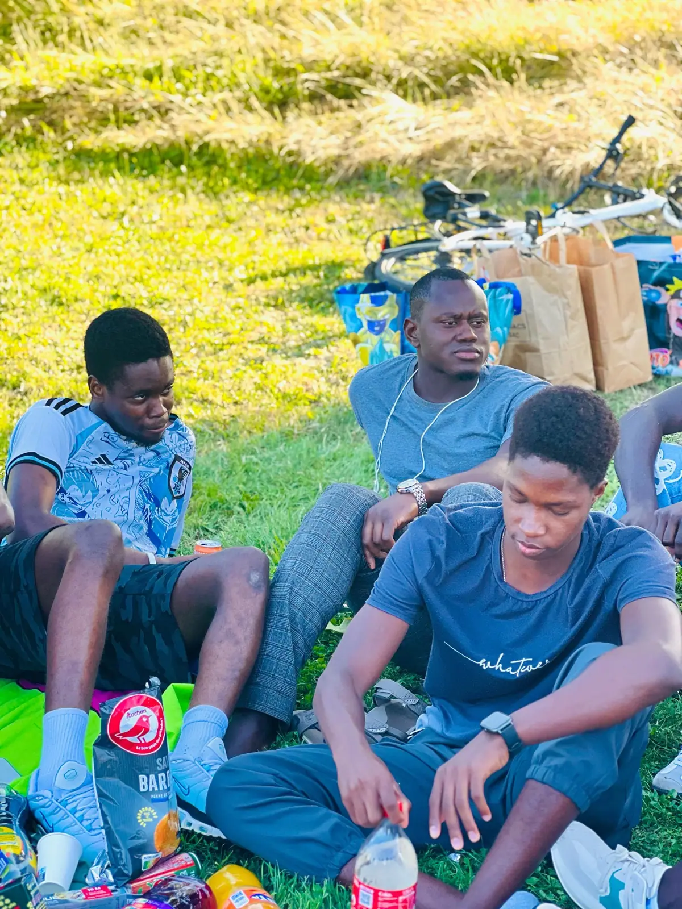
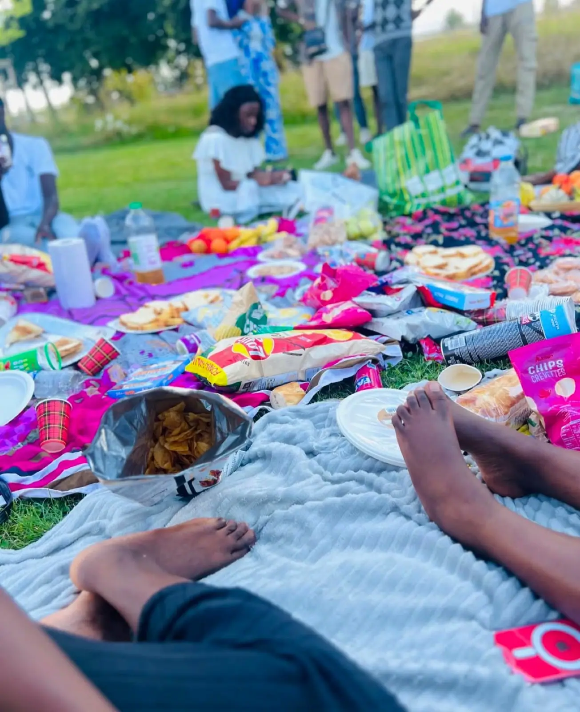

Thiaroye 44 sur la scène du Saulcy
Le match anciens contre nouveaux, joué la veille de la journée d'intégration.
Lire l'articleSport
Les Navétanes sont un tournoi de football amateur, une tradition sénégalaise qu'on retrouve reproduite un peu partout où il y a une communauté sénégalaise assez grande pour aligner une équipe. Cette année, l'AESM a fait le parcours jusqu'en finale régionale du Grand Est — avant de s'arrêter là.
Le 9 juin 2025, l'équipe de l'AESM affrontait celle de Nancy. Le match s'est joué jusqu'aux tirs au but, et c'est Metz qui l'a emporté. Une victoire nette, sans détour : l'équipe se qualifiait pour l'étape suivante du tournoi régional, avec l'idée d'aller le plus loin possible.
La suite s'est jouée le 14 juillet, à Strasbourg, pour la finale régionale des Navétanes du Grand Est. Il n'y avait pas de bus affrété pour l'occasion : les membres de l'AESM ont fait le trajet avec leurs propres voitures, comme c'est souvent le cas pour ce genre de déplacement associatif. Sur place, l'équipe de Metz s'est inclinée. La défaite a mis fin au parcours de l'AESM dans la compétition pour cette saison.
Il n'y a pas grand-chose à ajouter à ça : une victoire, puis une défaite, et un parcours qui s'arrête un cran plus tôt que ce que l'équipe espérait en juin.

Les Navétanes ne se réduisent pas au résultat sportif. Elles font partie d'un ensemble plus large d'activités — matchs anciens contre nouveaux, pique-niques au plan d'eau — qui créent, au fil de l'année, des liens que les réunions associatives ne créent pas de la même façon. L'esprit d'équipe qui se construit sur un terrain de football se retrouve ensuite, plus détendu, autour d'une nappe posée dans l'herbe.

L'équipe rejouera l'an prochain. C'est comme ça que fonctionne un tournoi amateur : on encaisse la défaite, on se retrouve, et on recommence la saison suivante.
À lire aussi
Le match anciens contre nouveaux, joué la veille de la journée d'intégration.
Lire l'article
Bilan du mandat 2024-2025 et élection d'Oumar Ka Thiam à la présidence.
Lire l'article